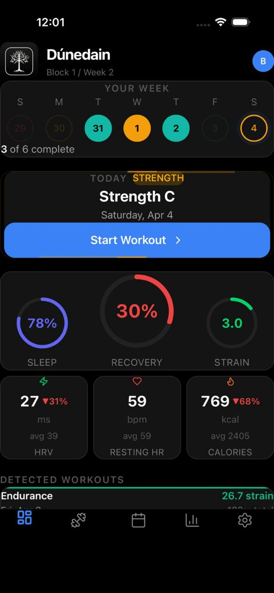
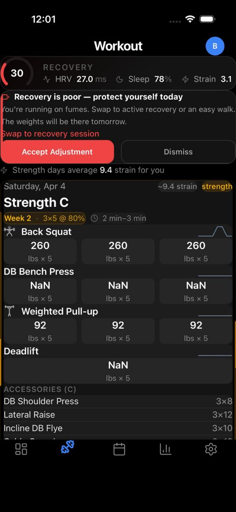
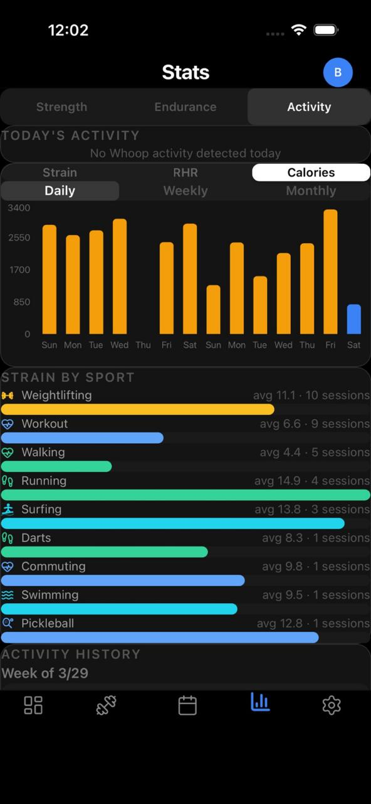
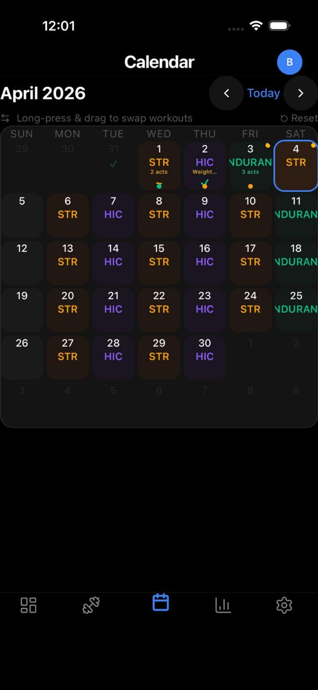
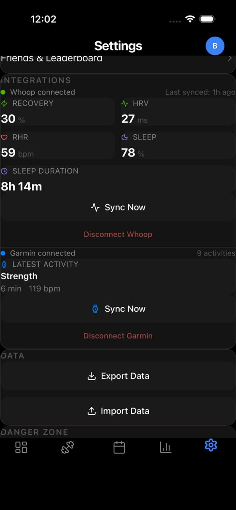

Train Like a Ranger
Tactical Barbell strength & conditioning, powered by Whoop and Garmin intelligence. Built for those who hold the line — whether or not anyone's watching.
See What's Inside ↓Available on iOS via TestFlight
Every workout calculated. Every rep programmed. Recovery data at a glance. Just show up and do the work.



Three days a week. Four lifts. A 6-week loading cycle that builds real, functional strength — the kind the Rangers of the North relied on to patrol the wild lands of Eriador for decades.
Set your 1 rep maxes once and the app handles everything — sets, reps, percentages, and progressive overload across the full cycle. Deadlift follows TB Option 1 with one work set per session. Accessories rotate automatically.
| Week | Protocol | Intensity |
|---|---|---|
| 1 | 3 × 5 | 70% |
| 2 | 3 × 5 | 80% |
| 3 | 3 × 3 | 90% |
| 4 | 3 × 5 | 75% |
| 5 | 3 × 3 | 85% |
| 6 | 3 × 2 | 95% |
Two HIC sessions and one endurance day per week — the Black Protocol from Tactical Barbell II. 40 HIC workouts and 7 endurance session types keep things varied and brutal.
Every third week is an easy week. Because even Aragorn rested before the Battle of Pelennor Fields. The app manages the rotation so you don't have to think about it — just lace up and go.
Multi-activity endurance sessions (run + swim, bike + ruck) are detected and logged together automatically when your devices are connected.

The Dúnedain didn't wander blind. Neither should you.
Connect your Whoop for recovery scores, strain, sleep performance, and heart rate zones. Connect your Garmin for pace, distance, splits, cadence, VO2 Max, and training effect.
The app merges both data streams — Garmin for the mechanics, Whoop for the physiology. Activities auto-match by time overlap. One tap to log.
When your recovery is low, Dúnedain tells you. A built-in recovery advisor recommends swapping to lighter work when your body needs it — because the strongest thing you can do some days is stand down.

Enter your 1RMs once. Every set, rep, and percentage is programmed across the entire 6-week cycle. No spreadsheets.
Whoop recovery data powers real-time recommendations. Low recovery? The app suggests swapping to active recovery before you overtrain.
Strain by sport, calorie trends, pace progressions, and workout history — all pulled automatically from your devices.
Life doesn't follow a schedule. Long-press and drag to swap training days without breaking your program structure.
Finished a run? The app knows. It detects activities from Garmin and Whoop, merges the data, and lets you log with one tap.
Pure black UI designed for OLED screens and 5 AM gym sessions. No blinding white screens. Ever. Rangers work in the dark.
The Dúnedain were the Rangers of the North — the last remnant of a great kingdom, scattered and outnumbered, holding the line through sheer stubbornness and duty. They patrolled the wild lands of Eriador for centuries, keeping the Shire and Bree safe from threats those people never even knew existed.
No one cheered for them. No one knew their names. Barliman Butterbur thought they were vagabonds. But Aragorn, heir of Isildur, was among them — 87 years old and still in his prime, carrying the blood of Númenor and the discipline of a lifetime of training in the wild.
This app is named for that ethos. Show up. Do the work. Hold the line. The wild lands don't patrol themselves — and neither does your fitness.
Track strain across every sport you do — weightlifting, running, swimming, surfing, cycling, and more. Daily, weekly, and monthly views show exactly where your effort goes.
Endurance trends track your pace over time. Strength stats show your loading progression. The activity tab breaks down calories and strain by sport so you can see the full picture of what your body is doing across every discipline.
Dúnedain is available now on iOS via TestFlight. Free. No ads. No subscriptions. Just the program.
Get Early AccessiOS · TestFlight · Free